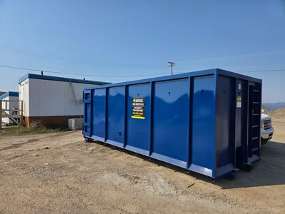
Bin Rentals
Mini, small, medium, large, and roll-off bins for residential, commercial, and construction waste in Kamloops and the Thompson Valley.
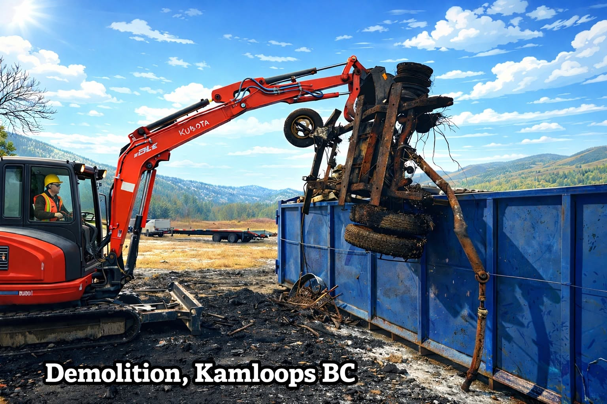
Reliable Disposal Services in Kamloops & the Thompson Valley
Bin rentals, excavation, landscaping products, recycling, and waste disposal services throughout Kamloops and the Thompson Valley. Fast, reliable service for homeowners, contractors, and businesses.
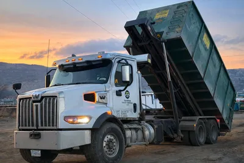
About Thompson Valley Disposal
Thompson Valley Disposal is a locally operated disposal and site services company serving Kamloops and the Thompson Valley. We provide roll-off bin rentals, excavation, landscaping, property clean-ups, firewood sales, recycling, and asbestos transportation for homeowners, contractors, and businesses.
Whether you need a bin for a weekend garage clean-out or a full site prep and clean-up crew, our team delivers the equipment and experience to get the job done on time and on budget.
Learn More About UsWhat We Do
From bin rentals to full site clean-ups, we handle the heavy work so your Thompson Valley property stays clean and project-ready.

Mini, small, medium, large, and roll-off bins for residential, commercial, and construction waste in Kamloops and the Thompson Valley.
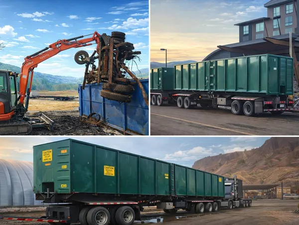
Professional excavation, grading, trenching, and site preparation for residential and commercial projects.
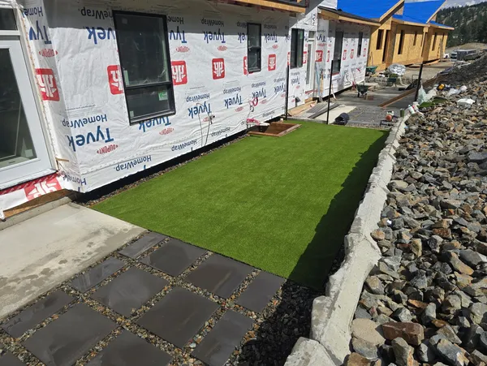
Landscaping, property clean-ups, yard waste removal, and seasonal maintenance for homes and businesses.
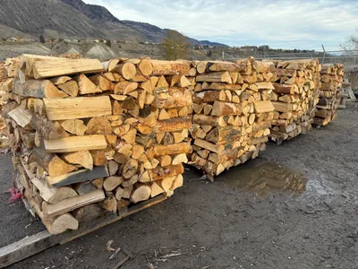
Seasoned firewood delivered to your door. Ideal for wood stoves, fireplaces, and outdoor fire pits.
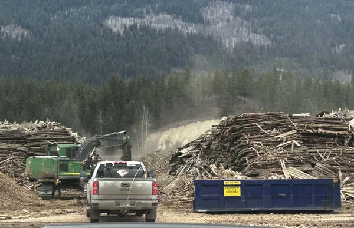
Responsible recycling and diversion of metal, cardboard, concrete, asphalt, and other recyclable materials.
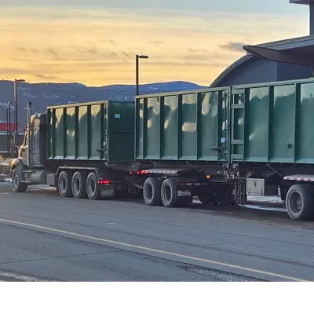
Licensed transport of asbestos-containing materials with safe handling and proper disposal documentation.
Recent Work
Real disposal, excavation, and clean-up work across the Thompson Valley.
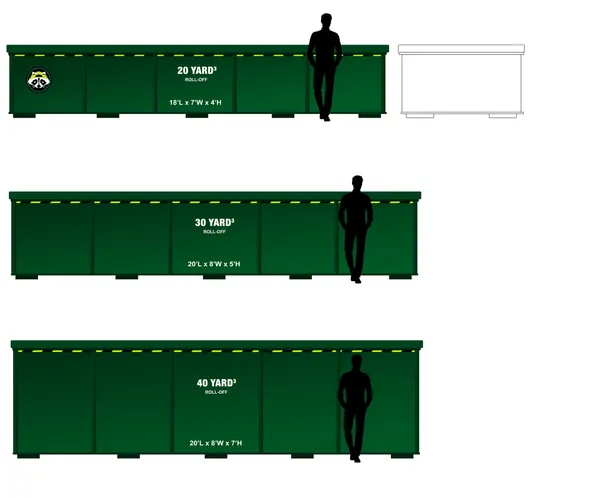
Multiple roll-off bins scheduled for ongoing waste removal on a commercial build in Kamloops.
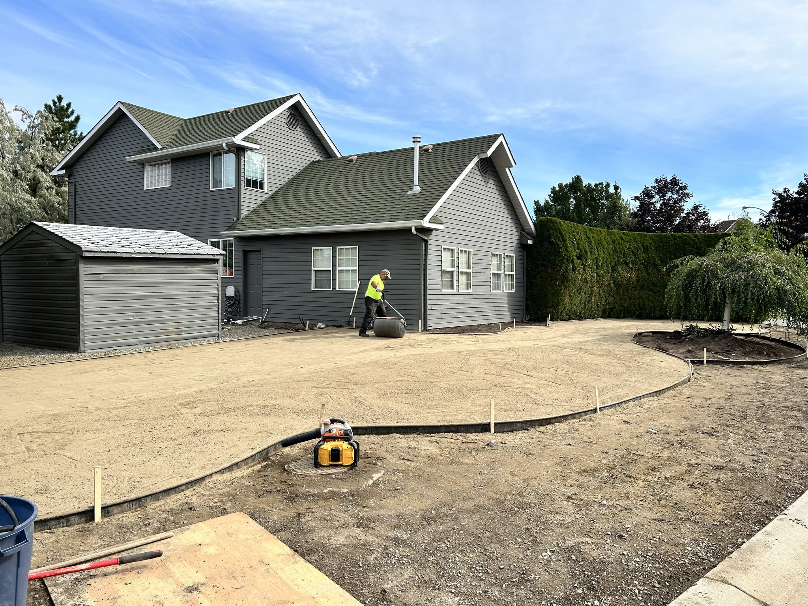
Excavation, rough grading, and drainage prep for a new home build near Kamloops.
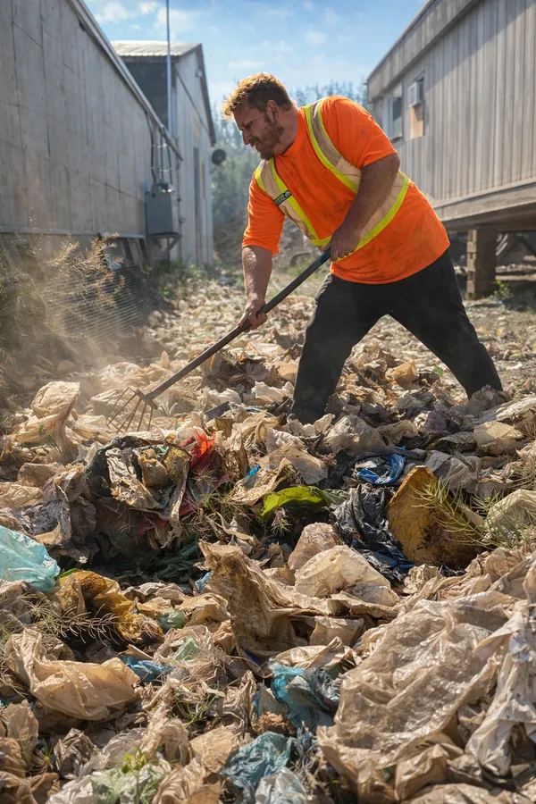
Full-property clean-up, debris removal, and disposal for a rural Thompson Valley acreage.
Transformations
Drag the slider to compare a property site before and after a Thompson Valley Disposal clean-up.
Why Choose Thompson Valley Disposal
We combine the right equipment with local service on every Kamloops and Thompson Valley project.
One call covers bins, excavation, clean-up, landscaping, firewood, recycling, and asbestos transport.
Peace of mind for hazardous materials, heavy equipment, and large-scale clean-ups.
Clear scheduling and reliable drop-offs and pick-ups, even on busy job sites.
We understand local regulations, landfill requirements, and the unique needs of Kamloops-area properties.
You’ll always know the cost, the timeline, and when your bin or crew will arrive.
We don’t just drop bins — we leave sites clean, graded, and ready for the next phase.
Client Reviews
"Thompson Valley Disposal dropped off a bin the same day I called. The driver was careful, friendly, and placed it exactly where I needed it. Highly recommend for any Kamloops clean-up."
"We use Thompson Valley Disposal on all our job sites. Reliable bins, fair pricing, and they always pick up on schedule. Makes waste management one less thing to worry about."
"They handled our acreage clean-up from start to finish — debris removal, grading, and a fresh load of firewood. Professional crew and great communication throughout."